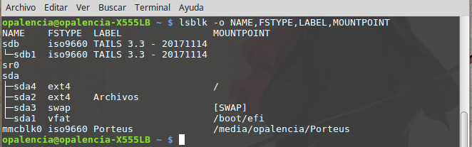

Mostrar los dispositivos como usb y discos duros > lsblk¶
Nombre del comando: lsblk
Man page online: https://linux.die.net/man/8/lsblk
Descripción: lsblk enumera información sobre todos los dispositivos de bloque disponibles o especificados. Si tu dispositivo no lo muestra éste comando, puede significar que ya no sirve.
Man page local: $ man lsblk o $ man lsblk > lsblk.txt
Instalado por defecto: Sí, al menos en Debian.
Algunas Opciones:
-a, --all También enumere los dispositivos vacíos. Por defecto se omiten.
-h, --help Muestra toda la información disponible y el listado de las columnas.
-o, --output list Especifique qué columnas de salida imprimir. Use -h para obtener una lista de todas las columnas compatibles.
-p, --paths Muestre la ruta completa de los dispositivos.
-h, --help Muestra toda la información disponible y el listado de las columnas.
Ejemplo 1: $ lsblk -o NAME,FSTYPE,LABEL,MOUNTPOINT, muestre los dispositivos con las siguientes columnas: nombre, tipo de formato, etiqueta, punto de montaje.
Ejemplo 2: $ lsblk -a, muestre todos los dispositivos.
Ejemplo 3: $ lsblk -p, muestre la ruta completa de los dispositivos.
Ejemplo 4: $ lsblk -f, muestre los dispositivos con las siguientes columnas: NAME, FSTYPE, LABEL, UUID, MOUNTPOINT.